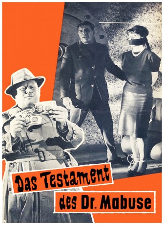

#12130 Das Dr. Mabuse 4 - Testament des Dr. Mabuse
Alternativ: The Terror of Doctor Mabuse (Englischer Titel)
 
 IMDB-Wertung: 5.8 / 10
IMDB-Wertung: 5.8 / 10  Metascore: 0
Metascore: 0 
Natürlich muß einer, der sein Testament gemacht hat, nicht gleich das Zeitliche segnen. Immerhin birgt der Film alle Möglichkeiten für einen endgültigen Tod des Dämonen. Doch Mabuse wäre nicht Mabuse, reichte die Verbannung hinter die Mauern eines Irrenhauses aus, ihn für immer kaltzustellen. Attacken und Attentate tragen eindeutig seine Handschrift: er blufft gern, sogar mit dem eigenen Tod. Gert Fröbe als Inspektor Lohmann muß seine ganze Intelligenz aufbieten, um den Überverbrecher zur Strecke zu bringen.
Jahr: 1962
Dauer: 88 Minuten
FSK: 12
Land: West-Deutschland Studio: Constantin FilmTonspuren:
Untertitel:
Auflösung: 1080p (1792x1080) Größe: 6707 MB
Genre: Thriller, Horror, Krimi, Mystery
Regisseur: Werner Klingler
Drehbuch: Ladislas Fodor, Robert A. Stemmle, Thea von Harbou, Norbert Jacques
Soundtrack: Raimund Rosenberger
Darsteller:
 Gert Fröbe als Kriminalkommissar Lohmann
Gert Fröbe als Kriminalkommissar Lohmann Senta Berger als Nelly
Senta Berger als Nelly- Helmut Schmid als Jonny Briggs
 Wolfgang Preiss als Dr. Mabuse
Wolfgang Preiss als Dr. Mabuse- Harald Juhnke als Kriminalassistent Krüger
- Leon Askin als Flocke
- Anneli Sauli als Wackel-Heidi
- Zeev Berlinsky als Gulliver
 Walter Rilla als Prof. Pohland
Walter Rilla als Prof. Pohland Günter Meisner als Henry - Kurzschluß (uncredited)
Günter Meisner als Henry - Kurzschluß (uncredited)- Charles Regnier als Mortimer
- Albert Bessler als Joe - Paragraphen
- Arthur Schilsky als Toni - Halseisen
- Claus Tinney als Jack - der Fingerbrecher
- Alain Dijon als Rolf - Augapfel
- Alon D'Armand als Franky
- Rolf Eden als Eddi - Jeton
- Gerhard Hartig als Box-Manager
Datei: X:\6-Hexalogie(A-Z)\Dr. Mabuse\Dr. Mabuse 4 - Testament des Dr. Mabuse, Das (1962, FSK12, 1792x1080).mkv seit 11.12.2019
Festplatte: HD Collection-3(N-Z)-6(A-Z)
 Es gibt insgesamt 9 Filme in der Gruppe '6-Hexalogie(A-Z)\Dr. Mabuse'
Es gibt insgesamt 9 Filme in der Gruppe '6-Hexalogie(A-Z)\Dr. Mabuse'